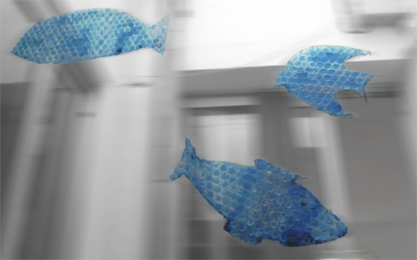
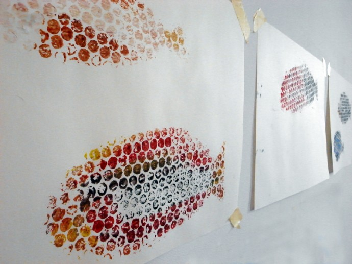

Facebook
Pinterest
Instagram
⌕ Search
ES
EN
DE
☰ Menu
Home
The House
Accessories
Decorate
Instruccions
Illustration
Custom water bottles
Notebook crafts and activities 01
App NOT ONLINE RIGHT NOW
Blog
Holidays
Christmas
Easter
Halloween
Carnival & costumes
Valentine’s Day
Birthday
Mother’s/Father’s Day
Back to school
Seasons
Spring
Summer
Autumn
Winter
What to do
Toys
Games
Printables
Food & recipes
Decoration
Painting
Experiments
Outdoors
Learning
Animals
Gifts & jewellery
Building & tricks
Other crafts
Material
Paper
Cardboard
Paper rolls
Recycling
Stones
Leaves & nature
Fabric & sewing
Blog
Holidays
Christmas
Easter
Halloween
Carnival & costumes
Valentine’s Day
Birthday
Mother’s/Father’s Day
Back to school
Seasons
Spring
Summer
Autumn
Winter
What to do
Toys
Games
Printables
Food & recipes
Decoration
Painting
Experiments
Outdoors
Learning
Animals
Gifts & jewellery
Building & tricks
Other crafts
Material
Paper
Cardboard
Paper rolls
Recycling
Stones
Leaves & nature
Fabric & sewing
Toy
Instrument
Activity
Our mushrooms
Activity
Mushrooms
Material
Cardboard robot
Activity
Broken toy
Activity
Fishes 03
Activity
Shapes

Activity
Fishes 02

Occasion
Spider web
Activity
Art
Material
Animals
Activity
My kids
Material
Paperweight
Activity
Letter paper
Activity
Magic dust
Activity
Rattle
Activity
Seed race
Play
Marbles
Activity
House
Activity
Telescopic
Activity
Chestnuts
Activity
Eletric bulb rattle
Food
Banana
Activity
Party jars
← Newer
Page 31 / 40
Older →